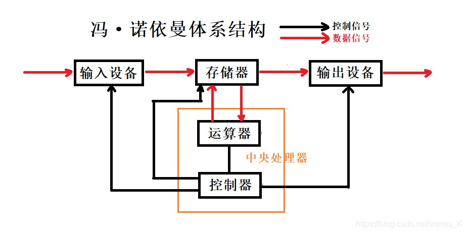

<++++++++[<+++++++++>-]<.
<<++++++++++[<++++++++++<-]<+.
<<++++++++++++[<+++++++++<-]<.
<<++++++++++++[<+++++++++<-]<.
<<++++++++++[<+++++++++++<-]<+.
<<++++[<+++++++++++<-]<.
<<++++++++++[<+++++++++++<-]<+++++++++.
<<++++++++++[<+++++++++++<-]<+.
<<++++++++++[<+++++++++++<-]<++++.
<<++++++++++++[<+++++++++<-]<.
<<++++++++++[<++++++++++<-]<.
Brainfuck是一种极小化的计算机语言，它是由Urban Müller在1993年创建的。由于fuck在英语中是脏话，这种语言有时被称为brainf*ck或brainf**k，甚至被简称为BF。
数学家冯·诺依曼提出了计算机的制造方案————计算机由五个部分组成：运算器、控制器、存储器、输入设备、输出设备，这套理论被称为冯·诺依曼体系结构。
如图，“控制器”控制用户输入数据到“输入设备”（通常为键盘），再将数据经过“运算器”和“存储器”的计算，将最终答案输出到“输出设备”（通常为屏幕）。
是的，理论上这套方案可以解决一切数学问题，而BF语言就是基于这套架构的！所以说BF语言的创立并非好玩，更是冯·诺依曼结构的缩影！
Müller的目标是建立一种最简单的、可以用最小的编译器/解释器来实现的、可以完成一切计算任务（前提是计算任务是有答案的）的编程语言。
经过整合，BF语言由8种指令组成，而这八种指令由八个符号构成，接下来进行详解：
BF语言指定：现在有一片内存空间，和一个指针（没学过指针的就当作一根指向内存空间种某一字节的针即可，无伤大雅）
指针一开始指向内存空间的第0字节，并且你可以用以下指令进行操作
| 指令名 | 功能 |
|---|---|
| < | 存储指令，让指针右移动一位。即如果指针指向第0字节，此指令将让指针指向第1字节 |
| > | 存储指令，让指针左移动一位。即如果指针指向第1字节，此指令将让指针指向第0字节 |
| + | 运算指令，让指针指向的字节加一。即如果指针指向的字节等于0，此指令将让这个字节等于1 |
| - | 运算指令，让指针指向的字节减一。即如果指针指向的字节等于1，此指令将让这个字节等于0 |
| , | 输入指令，输入一个字符，并将字符对应的ASCII码存入指针指向字节。即如果输入'A'，就会存入对应的ASCII码65 |
| . | 输出指令，输出一个字符，输出字符为指针指向的字节的ASCII码。即如果指针指向的字节为65，就会输出对应的字符'A' |
| [ | 流程控制指令，如果指针指向的字节等于零，就跳转到对应的]指令，并执行]指令后的内容 |
| ] | 流程控制指令，如果指针指向的字节不等于零，就跳转到对应的[指令，并执行[指令后的内容 |
Brainfuck程序可以用下面的替换方法翻译成C语言（假设ptr是char*类型）：
| BF | C语言 |
|---|---|
| < | ++ptr |
| > | --ptr |
| + | ++*ptr |
| - | --*ptr |
| , | *ptr=getchar() |
| . | putchar(*ptr) |
| [ | while(*ptr){ |
| ] | } |
想要输出Hello,world，就得先输出第一个"H"，查询得知H的ASCII码是72
难道我们要输入72个"+"然后用一个"."输出吗？
怎么可能？！听说过8*9=72吗？如果我们用一个字节负责计数循环，另一个字节负责存储ASCII码，循环8次，每次加9，就实现了8*9，很快，不是吗？
BF绝非浪得虚名！
以下是输出"H"的代码：
++++++++ ;设第0字节负责计数，且初始化为8
[>+++++++++<-] ;只要计数字节不为零，让第1字节加9
>. ;此时指针指向第0字节，并且第1字节为72，让指针指向第1字节并输出
注意，";"符号并不合法，所以不要在输入BF代码时使用，用";"仅方便注释！（现在的BF解释器不支持注释，注释功能以后会出）
那么总的下来输出Hello,world的代码就变成了：
<++++++++[<+++++++++>-]<.
<<++++++++++[<++++++++++<-]<+.
<<++++++++++++[<+++++++++<-]<.
<<++++++++++++[<+++++++++<-]<.
<<++++++++++[<+++++++++++<-]<+.
<<++++[<+++++++++++<-]<.
<<++++++++++[<+++++++++++<-]<+++++++++.
<<++++++++++[<+++++++++++<-]<+.
<<++++++++++[<+++++++++++<-]<++++.
<<++++++++++++[<+++++++++<-]<.
<<++++++++++[<++++++++++<-]<.
没有任何技巧，全部靠暴力，当然，以后如果允许，我还会再开发一个BF代码生成器，来一键生成有循环的输出代码
主要思路是：将输入的数转成数字相加，然后再转换成ASCII码输出，那么直接上代码
;设第0字节负责计数，第1字节存第一个数，第2字节存第二个数
>,>,, ;第二字节要输入两次数因为输入数据有个多余的"+"
<<++++++++ ;循环八次，每次让第1、2字节减去6（即减去48），这样就转换成了数字，至于为什么你翻一翻ASCII码表就知道了
[>------>------<<-] ;开始循环
>>[<+>-] ;把第2字节的数搬到第1字节实现加法
<<++++++++ ;再循环一次，不过是数字转ASCII
[>++++++<-] ;开始循环
>. ;输出
[-] ;将当前指针的值归零。
[[-]<] ;将当前指针以及之前的指针归零。
,. ;从键盘读取一个字符并输出到屏幕上。
[->+<] ;把当前的字节加到后面的字节中（破坏性的加，它导致左边的字节被归零）。
| 命令 | 命令作用 |
|---|---|
| help | 解释器的命令可能会变，但是这个命令永远不变！你可以用help指令获得解释器的帮助信息 |
| about | 输入这个指令可以显示作品的详细信息和作者联系方式 |
| code | 输入这个指令会进入代码编写界面，此时你将看到一个"]"的提示符，你可以在这个界面输入代码，支持多行输入，用单独一行输入"$"符号结束编写，系统将自动运行你编写的BF代码 |
作品仓库：gitee.com/QuXiangrong/brfk
友情链接：BrainFuck-百度百科
作者邮箱：woshiquxiangrong@163.com
——2022年8月17日
水平有限，欢迎指正！